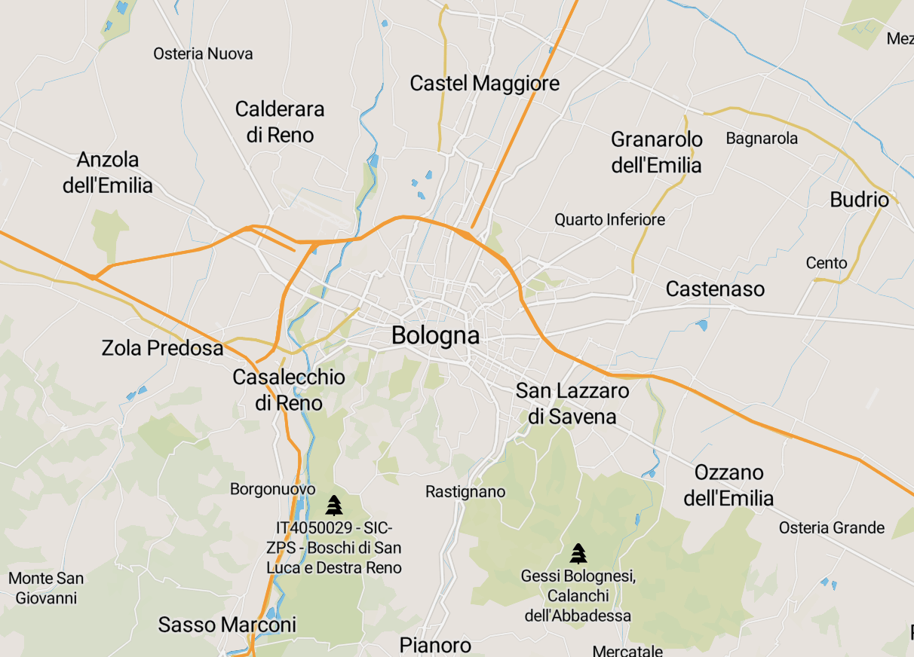

Eventi nella categoria: culturabolognaparent
Naviga per Zona di Prossimità:

Fuori Bologna (1 eventi)
 IRNERIO (1 eventi)
IRNERIO (1 eventi)
 MALPIGHI (1 eventi)
MALPIGHI (1 eventi)
 PONTEVECCHIO - MAZZINI (1 eventi)
PONTEVECCHIO - MAZZINI (1 eventi)
IRNERIO (1 eventi)
MALPIGHI (1 eventi)
PONTEVECCHIO - MAZZINI (1 eventi)
Zona di Prossimità: Fuori Bologna
WOW! Dall'idea alla canzone: il ruolo del marketing manager
Descrizione evento:
con Rossella Lo Faro
Zona di Prossimità: Fuori Bologna
Indirizzo: Piazza Nettuno 1/a - Bologna
Area Statistica: Fuori Bologna
Zona di Prossimità: IRNERIO
La musica della Chiesa da Porta Pia ai giorni nostri: norme, modelli, realizzazioni
Descrizione evento:
Manifestazione musicologica
Zona di Prossimità: IRNERIO
Indirizzo: via San Vitale 114, 40125 Bologna, Italia
Area Statistica: IRNERIO-2
Zona di Prossimità: MALPIGHI
Ventottesimo Incontro dei Dottorati di ricerca in Discipline musicali
Descrizione evento:
Incontro musicologico
Zona di Prossimità: MALPIGHI
Indirizzo: via Barberia 4, Bologna
Area Statistica: MALPIGHI-2
Zona di Prossimità: PONTEVECCHIO - MAZZINI
I luoghi del quartiere Savena ieri e oggi
Descrizione evento:
Mostra fotografica a cura della Biblioteca Natalia Ginzburg, del Circolo Arci Benassi e di Arci Bologna
Zona di Prossimità: PONTEVECCHIO - MAZZINI
Indirizzo: viale Cavina 4 - Bologna
Area Statistica: VIA ARNO